Tutorial
This tutorial will show you how to create plots with VegaLite.jl.
Data
Plots are a way to visualize data, and therefore every plot starts with some dataset. VegaLite.jl expects data to be in tabular form, and it works best if you pass it tidy data.
The definition of tabular data we are using here is very simple: think of a table that has a header and consists of a number of columns and rows. The header gives each column a name. The rows correspond to the actual data. Columns don't have to be of the same data type, i.e. you can have one column that contains Strings, and another that contains Float64 values.
VegaLite.jl can digest many different Julia types that store tabular data. You can, for example, plot data that is stored in a DataFrame, JuliaDB.jl or loaded from disc with CSVFiles.jl. In this tutorial we will plot data that ships in the package VegaDatasets.jl.
The dataset we will use for this tutorial is the cars dataset from the VegaDatasets.jl. The dataset contains information about a couple hundred cars. We can load the dataset with the dataset function:
using VegaDatasets
data = dataset("cars")| Name | Miles_per_Gallon | Cylinders | Displacement | Horsepower | Weight_in_lbs | Acceleration | Year | Origin |
|---|---|---|---|---|---|---|---|---|
| "chevrolet chevelle malibu" | 18.0 | 8 | 307.0 | 130 | 3504 | 12.0 | "1970-01-01" | "USA" |
| "buick skylark 320" | 15.0 | 8 | 350.0 | 165 | 3693 | 11.5 | "1970-01-01" | "USA" |
| "plymouth satellite" | 18.0 | 8 | 318.0 | 150 | 3436 | 11.0 | "1970-01-01" | "USA" |
| "amc rebel sst" | 16.0 | 8 | 304.0 | 150 | 3433 | 12.0 | "1970-01-01" | "USA" |
| "ford torino" | 17.0 | 8 | 302.0 | 140 | 3449 | 10.5 | "1970-01-01" | "USA" |
| "ford galaxie 500" | 15.0 | 8 | 429.0 | 198 | 4341 | 10.0 | "1970-01-01" | "USA" |
| "chevrolet impala" | 14.0 | 8 | 454.0 | 220 | 4354 | 9.0 | "1970-01-01" | "USA" |
| "plymouth fury iii" | 14.0 | 8 | 440.0 | 215 | 4312 | 8.5 | "1970-01-01" | "USA" |
| "pontiac catalina" | 14.0 | 8 | 455.0 | 225 | 4425 | 10.0 | "1970-01-01" | "USA" |
| "amc ambassador dpl" | 15.0 | 8 | 390.0 | 190 | 3850 | 8.5 | "1970-01-01" | "USA" |
| ⋮ | ⋮ | ⋮ | ⋮ | ⋮ | ⋮ | ⋮ | ⋮ | ⋮ |
... with 396 more rows.
We are storing the dataset in the variable data, so that we can access it more easily in the following examples.
Simple Scatter Plot
We will start out with a very simple scatter plot. The minimum steps for creating a plot are to 1) pass the data we want to plot to the plot macro, and 2) specify what kind of visual shape, or "mark" in Vega-Lite terminology, we want to use to visualize our data. We "pipe" the data into the plot macro using the pipe operator |>. The actual plot is created by a call to the @vlplot macro. The first argument to the @vlplot macro specifies what kind of mark we want to use for our plot. We pass the name of the mark as a symbol. In our example we want to use points for our plot. The following code shows this minimal plot:
using VegaLite, VegaDatasets
data = dataset("cars")
data |> @vlplot(:point)While this code produces a plot, it is not a very useful plot. Vega-Lite is actually drawing a point for every row in our input dataset. But it is drawing all these points on top of each other, which makes the plot so uninteresting.
By the way, the code above is based on the premise that it is executed in the Julia command line (REPL). When the code is executed from within a script (or a function), the plot needs to be explicitly displayed as
using VegaLite, VegaDatasets
data = dataset("cars")
data |> @vlplot(:point) |> displayTo create a more interesting plot, we next need to specify how Vega-Lite should connect key properties of the points (for example their position) with the data that we passed it. These connections are called "encodings" in Vega-Lite. We will start out by specifying how both the x and y position encoding channel for the points should take values from the data we passed:
using VegaLite, VegaDatasets
data = dataset("cars")
data |> @vlplot(:point, x=:Miles_per_Gallon, y=:Horsepower)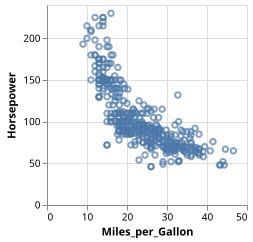
This code now produces a nice scatter plot. We specify these encodings by using keyword arguments inside the @vlplot macro that correspond to the names of the encoding channels, in our example the x and y channel. We pass the names of the columns in our dataset that we want to use for these channels as symbols, e.g. as :Miles_per_Gallon and :Horsepower.
Encoding
Vega-Lite provides many different encoding channels beyond the x and y channel we saw in the previous section. This section will introduce a few more encoding channels and how you can configure their details. You can read about the full list of encoding channels in the original Vega-Lite documentation.
Channels
As our next step we will encode the color channel. The following code will use the Origin column in our dataset for the color channel, so that the points in our plot use a different color for each unique value in the Origin column:
using VegaLite, VegaDatasets
data = dataset("cars")
data |> @vlplot(:point, x=:Miles_per_Gallon, y=:Horsepower, color=:Origin)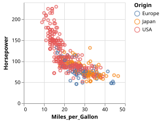
If we want to produce a separate plot for each of the three unique Origin values, we can instead encode the columns channel so that we create a facet plot:
using VegaLite, VegaDatasets
data = dataset("cars")
data |> @vlplot(:point, x=:Miles_per_Gallon, y=:Horsepower, column=:Origin)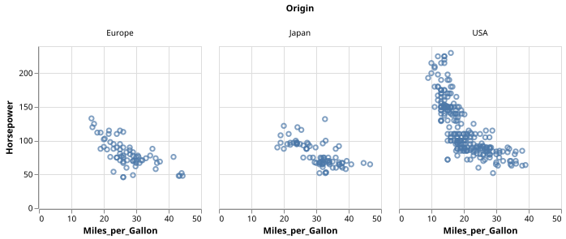
We can now use the color channel to visualize yet another column from our dataset. The following code uses the color encoding channel to visualize the Cylinders column in our dataset:
using VegaLite, VegaDatasets
data = dataset("cars")
data |>
@vlplot(:point, x=:Miles_per_Gallon, y=:Horsepower, column=:Origin, color=:Cylinders)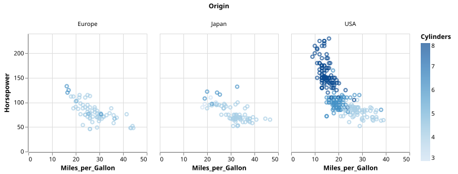
Channel types
Before we introduce channel types, we will go back to a more simple plot without faceting.
using VegaLite, VegaDatasets
data = dataset("cars")
data |>
@vlplot(:point, x=:Miles_per_Gallon, y=:Horsepower, color="Cylinders")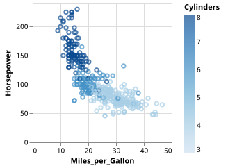
We are still encoding the color channel, but note that we are now passing the name of the column as a String, not as a Symbol (i.e. we are writing color="Cylinders" instead of color=:Cylinders). This is a general pattern in VegaLite.jl: you can generally use Symbols and Strings interchangeably. Using a Symbol saves you one extra character (the closing "), so we tend to use those when possible, but sometimes you need to use characters that can't be used in Julia's literal Symbol syntax, and then we use Strings.
The legend that was automatically generated for the color channel in the previous plot uses a continuous scale, i.e. it shows a smooth range of colors. VegaLite.jl automatically encodes any numeric column in the source data as such a "quantitative" channel. Sometimes that is not a good automatic default, though. For example, in our example case there are only a handful of distinct integer values used in the Cylinders column, and in such a case we might prefer a more discrete legend.
We can tell VegaLite.jl to change the type of a channel from say the default quantitative type to an ordinal channel by slightly changing the channel encoding to color="Cylinders:ordinal". In this case we specify the type of the encoding as a second argument in the string that is separated from the column name by a :. We can further shorten this by writing color="Cylinders:o", i.e. we can only use the first character of the type of encoding we want to use.
Using this new syntax we can generate the following plot:
using VegaLite, VegaDatasets
data = dataset("cars")
data |>
@vlplot(:point, x=:Miles_per_Gallon, y=:Horsepower, color="Cylinders:o")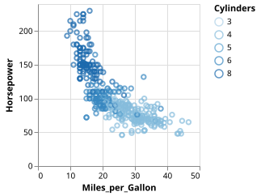
Values in an ordinal channel are still ordered, so Vega-Lite automatically picks a color scheme that can showcase such an order.
What if we don't want to use a color scheme that signals any order? In that case we can change the type of the encoding to nominal by using the syntax color="Cylinders:n", generating the following plot:
using VegaLite, VegaDatasets
data = dataset("cars")
data |>
@vlplot(:point, x=:Miles_per_Gallon, y=:Horsepower, color="Cylinders:n")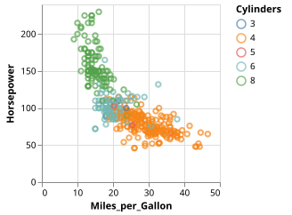
You can also use the same encoding type specification for any other encoding channel. The following example puts the Cylinders column on the x axis of the plot and specifies it as an ordinal encoding:
using VegaLite, VegaDatasets
data = dataset("cars")
data |> @vlplot(:point, x="Cylinders:o", y=:Miles_per_Gallon)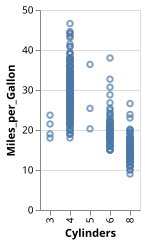
Channel properties
Our previous plots looked quite decent, but in many cases we probably still want to customize a whole range of features of our plots. One simple example in the previous plots might be the label of the axis that encoded the Miles_per_Gallon column. The axis automatically got labeled by the column name, and we might want to remove the underscores from the actual axis label.
Whenever we want to specify more properties for a channel than just the name or type, we have to assign a composite value to the name of the channel by using curly brackets {}. Note that this use of {} is specific to the @vlplot macro, i.e. it is not a generic Julia language feature. For example, to specify an alternative title for an axis, we would write x={:Miles_per_Gallon, title="MPG"}. Note that within the composite value we can still pass the name of the field to be encoded as a first positional argument, followed by arbitrary many named arguments. We can use similar syntax to also adjust the title of the legend, as shown in the following code example:
using VegaLite, VegaDatasets
data = dataset("cars")
data |>
@vlplot(
:point,
x={
:Miles_per_Gallon,
title="MPG"
},
y=:Horsepower,
color={
"Cylinders:n",
legend={title="No of Cylinders"}
}
)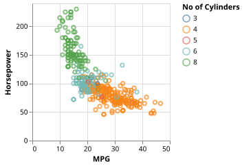
Channels have a large number of properties that you can customize in this way, they are all explained in the original Vega-Lite documentation.
Marks
Our examples all used a point mark so far, but Vega-Lite supports many more types of marks. The following example uses a line mark instead of the point mark we have used so far:
using VegaLite, VegaDatasets, Query
dataset("stocks") |>
@filter(_.symbol=="GOOG") |>
@vlplot(:line, x={"date:t", axis={format="%Y"}}, y=:price)"><g class="mark-group role-frame root" role="graphics-object" aria-roledescription="group mark container"><g transform="translate(0,0)"><path class="background" aria-hidden="true" d="M0.5,0.5h200v200h-200Z" stroke="%23ddd"/><g><g class="mark-group role-axis" aria-hidden="true"><g transform="translate(0.5,200.5)"><path class="background" aria-hidden="true" d="M0,0h0v0h0Z" pointer-events="none"/><g><g class="mark-rule role-axis-grid" pointer-events="none"><line transform="translate(15,-200)" x2="0" y2="200" stroke="%23ddd" stroke-width="1" opacity="1"/><line transform="translate(51,-200)" x2="0" y2="200" stroke="%23ddd" stroke-width="1" opacity="1"/><line transform="translate(87,-200)" x2="0" y2="200" stroke="%23ddd" stroke-width="1" opacity="1"/><line transform="translate(122,-200)" x2="0" y2="200" stroke="%23ddd" stroke-width="1" opacity="1"/><line transform="translate(158,-200)" x2="0" y2="200" stroke="%23ddd" stroke-width="1" opacity="1"/><line transform="translate(194,-200)" x2="0" y2="200" stroke="%23ddd" stroke-width="1" opacity="1"/></g></g><path class="foreground" aria-hidden="true" d="" pointer-events="none" display="none"/></g></g><g class="mark-group role-axis" aria-hidden="true"><g transform="translate(0.5,0.5)"><path class="background" aria-hidden="true" d="M0,0h0v0h0Z" pointer-events="none"/><g><g class="mark-rule role-axis-grid" pointer-events="none"><line transform="translate(0,200)" x2="200" y2="0" stroke="%23ddd" stroke-width="1" opacity="1"/><line transform="translate(0,150)" x2="200" y2="0" stroke="%23ddd" stroke-width="1" opacity="1"/><line transform="translate(0,100)" x2="200" y2="0" stroke="%23ddd" stroke-width="1" opacity="1"/><line transform="translate(0,50)" x2="200" y2="0" stroke="%23ddd" stroke-width="1" opacity="1"/><line transform="translate(0,0)" x2="200" y2="0" stroke="%23ddd" stroke-width="1" opacity="1"/></g></g><path class="foreground" aria-hidden="true" d="" pointer-events="none" display="none"/></g></g><g class="mark-group role-axis" role="graphics-symbol" aria-roledescription="axis" aria-label="X-axis titled %27date%27 for a time scale with values from 2004 to 2010"><g transform="translate(0.5,200.5)"><path class="background" aria-hidden="true" d="M0,0h0v0h0Z" pointer-events="none"/><g><g class="mark-rule role-axis-tick" pointer-events="none"><line transform="translate(15,0)" x2="0" y2="5" stroke="%23888" stroke-width="1" opacity="1"/><line transform="translate(51,0)" x2="0" y2="5" stroke="%23888" stroke-width="1" opacity="1"/><line transform="translate(87,0)" x2="0" y2="5" stroke="%23888" stroke-width="1" opacity="1"/><line transform="translate(122,0)" x2="0" y2="5" stroke="%23888" stroke-width="1" opacity="1"/><line transform="translate(158,0)" x2="0" y2="5" stroke="%23888" stroke-width="1" opacity="1"/><line transform="translate(194,0)" x2="0" y2="5" stroke="%23888" stroke-width="1" opacity="1"/></g><g class="mark-text role-axis-label" pointer-events="none"><text text-anchor="middle" transform="translate(15.014720314033367,15)" font-family="sans-serif" font-size="10px" fill="%23000" opacity="1">2005</text><text text-anchor="middle" transform="translate(50.834151128557416,15)" font-family="sans-serif" font-size="10px" fill="%23000" opacity="1">2006</text><text text-anchor="middle" transform="translate(86.65358194308145,15)" font-family="sans-serif" font-size="10px" fill="%23000" opacity="1">2007</text><text text-anchor="middle" transform="translate(122.47301275760549,15)" font-family="sans-serif" font-size="10px" fill="%23000" opacity="1">2008</text><text text-anchor="middle" transform="translate(158.39057899901866,15)" font-family="sans-serif" font-size="10px" fill="%23000" opacity="1">2009</text><text text-anchor="middle" transform="translate(194.21000981354268,15)" font-family="sans-serif" font-size="10px" fill="%23000" opacity="1">2010</text></g><g class="mark-rule role-axis-domain" pointer-events="none"><line transform="translate(0,0)" x2="200" y2="0" stroke="%23888" stroke-width="1" opacity="1"/></g><g class="mark-text role-axis-title" pointer-events="none"><text text-anchor="middle" transform="translate(100,30)" font-family="sans-serif" font-size="11px" font-weight="bold" fill="%23000" opacity="1">date</text></g></g><path class="foreground" aria-hidden="true" d="" pointer-events="none" display="none"/></g></g><g class="mark-group role-axis" role="graphics-symbol" aria-roledescription="axis" aria-label="Y-axis titled %27price%27 for a linear scale with values from 0 to 800"><g transform="translate(0.5,0.5)"><path class="background" aria-hidden="true" d="M0,0h0v0h0Z" pointer-events="none"/><g><g class="mark-rule role-axis-tick" pointer-events="none"><line transform="translate(0,200)" x2="-5" y2="0" stroke="%23888" stroke-width="1" opacity="1"/><line transform="translate(0,150)" x2="-5" y2="0" stroke="%23888" stroke-width="1" opacity="1"/><line transform="translate(0,100)" x2="-5" y2="0" stroke="%23888" stroke-width="1" opacity="1"/><line transform="translate(0,50)" x2="-5" y2="0" stroke="%23888" stroke-width="1" opacity="1"/><line transform="translate(0,0)" x2="-5" y2="0" stroke="%23888" stroke-width="1" opacity="1"/></g><g class="mark-text role-axis-label" pointer-events="none"><text text-anchor="end" transform="translate(-7,203)" font-family="sans-serif" font-size="10px" fill="%23000" opacity="1">0</text><text text-anchor="end" transform="translate(-7,153)" font-family="sans-serif" font-size="10px" fill="%23000" opacity="1">200</text><text text-anchor="end" transform="translate(-7,103)" font-family="sans-serif" font-size="10px" fill="%23000" opacity="1">400</text><text text-anchor="end" transform="translate(-7,53)" font-family="sans-serif" font-size="10px" fill="%23000" opacity="1">600</text><text text-anchor="end" transform="translate(-7,3)" font-family="sans-serif" font-size="10px" fill="%23000" opacity="1">800</text></g><g class="mark-rule role-axis-domain" pointer-events="none"><line transform="translate(0,200)" x2="0" y2="-200" stroke="%23888" stroke-width="1" opacity="1"/></g><g class="mark-text role-axis-title" pointer-events="none"><text text-anchor="middle" transform="translate(-30.0869140625,100) rotate(-90) translate(0,-2)" font-family="sans-serif" font-size="11px" font-weight="bold" fill="%23000" opacity="1">price</text></g></g><path class="foreground" aria-hidden="true" d="" pointer-events="none" display="none"/></g></g><g class="mark-line role-mark marks" role="graphics-object" aria-roledescription="line mark container"><path aria-label="date: 2004; price: 102.37" role="graphics-symbol" aria-roledescription="line mark" d="M0,174.408L3.042,167.6L5.986,152.34L9.028,154.505L11.973,151.803L15.015,151.095L18.057,153.003L20.805,154.873L23.847,145L26.791,130.683L29.833,126.463L32.777,128.06L35.819,128.5L38.862,120.885L41.806,106.965L44.848,98.773L47.792,96.285L50.834,91.835L53.876,109.345L56.624,102.5L59.666,95.515L62.61,107.045L65.653,95.168L68.597,103.35L71.639,105.368L74.681,99.525L77.625,80.903L80.667,78.798L83.611,84.88L86.654,74.625L89.696,87.638L92.444,85.46L95.486,82.155L98.43,75.523L101.472,69.325L104.416,72.5L107.458,71.188L110.5,58.183L113.445,23.25L116.487,26.75L119.431,27.13L122.473,58.925L125.515,82.205L128.361,89.883L131.403,56.428L134.347,53.55L137.39,68.395L140.334,81.563L143.376,84.178L146.418,99.87L149.362,110.16L152.404,126.76L155.348,123.088L158.391,115.368L161.433,115.503L164.181,112.985L167.223,101.008L170.167,95.693L173.209,94.603L176.153,89.238L179.195,84.583L182.237,76.038L185.182,65.97L188.224,54.25L191.168,45.005L194.21,67.515L197.252,68.3L200,59.952" stroke="%234c78a8" stroke-width="2"/></g></g><path class="foreground" aria-hidden="true" d="" display="none"/></g></g></g></svg>)
Note how we specify the line mark type as the first positional argument to the @vlplot macro call. This examples also showcases a number of other features. First, it uses Query.jl to filter the dataset before we plot it (we only want to plot the stock price for Google). The example also introduces a encoding channel type we haven't seen before: we are using a temporal channel type here (configured with the :t part in "date:t"). The temporal type is specifically designed for date and time information. We are also changing how the values of the x axis are displayed in the plot by specifying a custom format string for the x axis.
Sometimes we will need to configure more aspects of the mark than just the type of mark. In that case we can pass additional properties by using the composite syntax we have seen before. In the following example we are using a line mark, and we are customizing the color of the line and are also configuring it to show points on top of the line itself:
using VegaLite, VegaDatasets, Query
dataset("stocks") |>
@filter(_.symbol=="GOOG") |>
@vlplot(
mark={
:line,
point=true,
color=:red
},
x={
"date:t",
axis={
format="%Y"
}
},
y=:price
)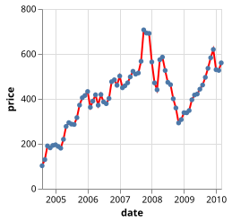
Note how we have to use the more explicit named keyword syntax mark={} when we want to specify more mark properties inside the @vlplot macro call. We can still pass the mark type as a positional first argument inside the value we assign to mark, though.
There are many different mark types in Vega-Lite, with many different options to customize their appearance. The original Vega-Lite documentation describes all these options in detail.
Aggregations
The following graph shows many individual data points for each x axis value:
using VegaLite, VegaDatasets
dataset("cars") |> @vlplot(:point, x=:Origin, y=:Miles_per_Gallon)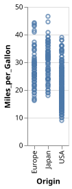
In such situations it can often be more interesting to compute an aggregate value for each x axis value, for example the mean miles per gallon number for each region:
using VegaLite, VegaDatasets
dataset("cars") |> @vlplot(:point, x=:Origin, y="average(Miles_per_Gallon)")"><g class="mark-group role-frame root" role="graphics-object" aria-roledescription="group mark container"><g transform="translate(0,0)"><path class="background" aria-hidden="true" d="M0.5,0.5h60v200h-60Z" stroke="%23ddd"/><g><g class="mark-group role-axis" aria-hidden="true"><g transform="translate(0.5,0.5)"><path class="background" aria-hidden="true" d="M0,0h0v0h0Z" pointer-events="none"/><g><g class="mark-rule role-axis-grid" pointer-events="none"><line transform="translate(0,200)" x2="60" y2="0" stroke="%23ddd" stroke-width="1" opacity="1"/><line transform="translate(0,171)" x2="60" y2="0" stroke="%23ddd" stroke-width="1" opacity="1"/><line transform="translate(0,143)" x2="60" y2="0" stroke="%23ddd" stroke-width="1" opacity="1"/><line transform="translate(0,114)" x2="60" y2="0" stroke="%23ddd" stroke-width="1" opacity="1"/><line transform="translate(0,86)" x2="60" y2="0" stroke="%23ddd" stroke-width="1" opacity="1"/><line transform="translate(0,57)" x2="60" y2="0" stroke="%23ddd" stroke-width="1" opacity="1"/><line transform="translate(0,29)" x2="60" y2="0" stroke="%23ddd" stroke-width="1" opacity="1"/><line transform="translate(0,0)" x2="60" y2="0" stroke="%23ddd" stroke-width="1" opacity="1"/></g></g><path class="foreground" aria-hidden="true" d="" pointer-events="none" display="none"/></g></g><g class="mark-group role-axis" role="graphics-symbol" aria-roledescription="axis" aria-label="X-axis titled %27Origin%27 for a discrete scale with 3 values: Europe, Japan, USA"><g transform="translate(0.5,200.5)"><path class="background" aria-hidden="true" d="M0,0h0v0h0Z" pointer-events="none"/><g><g class="mark-rule role-axis-tick" pointer-events="none"><line transform="translate(10,0)" x2="0" y2="5" stroke="%23888" stroke-width="1" opacity="1"/><line transform="translate(30,0)" x2="0" y2="5" stroke="%23888" stroke-width="1" opacity="1"/><line transform="translate(50,0)" x2="0" y2="5" stroke="%23888" stroke-width="1" opacity="1"/></g><g class="mark-text role-axis-label" pointer-events="none"><text text-anchor="end" transform="translate(10,7) rotate(270) translate(0,3)" font-family="sans-serif" font-size="10px" fill="%23000" opacity="1">Europe</text><text text-anchor="end" transform="translate(30,7) rotate(270) translate(0,3)" font-family="sans-serif" font-size="10px" fill="%23000" opacity="1">Japan</text><text text-anchor="end" transform="translate(50,7) rotate(270) translate(0,3)" font-family="sans-serif" font-size="10px" fill="%23000" opacity="1">USA</text></g><g class="mark-rule role-axis-domain" pointer-events="none"><line transform="translate(0,0)" x2="60" y2="0" stroke="%23888" stroke-width="1" opacity="1"/></g><g class="mark-text role-axis-title" pointer-events="none"><text text-anchor="middle" transform="translate(30,55.166015625)" font-family="sans-serif" font-size="11px" font-weight="bold" fill="%23000" opacity="1">Origin</text></g></g><path class="foreground" aria-hidden="true" d="" pointer-events="none" display="none"/></g></g><g class="mark-group role-axis" role="graphics-symbol" aria-roledescription="axis" aria-label="Y-axis titled %27Average of Miles_per_Gallon%27 for a linear scale with values from 0 to 35"><g transform="translate(0.5,0.5)"><path class="background" aria-hidden="true" d="M0,0h0v0h0Z" pointer-events="none"/><g><g class="mark-rule role-axis-tick" pointer-events="none"><line transform="translate(0,200)" x2="-5" y2="0" stroke="%23888" stroke-width="1" opacity="1"/><line transform="translate(0,171)" x2="-5" y2="0" stroke="%23888" stroke-width="1" opacity="1"/><line transform="translate(0,143)" x2="-5" y2="0" stroke="%23888" stroke-width="1" opacity="1"/><line transform="translate(0,114)" x2="-5" y2="0" stroke="%23888" stroke-width="1" opacity="1"/><line transform="translate(0,86)" x2="-5" y2="0" stroke="%23888" stroke-width="1" opacity="1"/><line transform="translate(0,57)" x2="-5" y2="0" stroke="%23888" stroke-width="1" opacity="1"/><line transform="translate(0,29)" x2="-5" y2="0" stroke="%23888" stroke-width="1" opacity="1"/><line transform="translate(0,0)" x2="-5" y2="0" stroke="%23888" stroke-width="1" opacity="1"/></g><g class="mark-text role-axis-label" pointer-events="none"><text text-anchor="end" transform="translate(-7,203)" font-family="sans-serif" font-size="10px" fill="%23000" opacity="1">0</text><text text-anchor="end" transform="translate(-7,174.42857142857144)" font-family="sans-serif" font-size="10px" fill="%23000" opacity="1">5</text><text text-anchor="end" transform="translate(-7,145.85714285714286)" font-family="sans-serif" font-size="10px" fill="%23000" opacity="1">10</text><text text-anchor="end" transform="translate(-7,117.28571428571428)" font-family="sans-serif" font-size="10px" fill="%23000" opacity="1">15</text><text text-anchor="end" transform="translate(-7,88.71428571428572)" font-family="sans-serif" font-size="10px" fill="%23000" opacity="1">20</text><text text-anchor="end" transform="translate(-7,60.14285714285714)" font-family="sans-serif" font-size="10px" fill="%23000" opacity="1">25</text><text text-anchor="end" transform="translate(-7,31.57142857142858)" font-family="sans-serif" font-size="10px" fill="%23000" opacity="1">30</text><text text-anchor="end" transform="translate(-7,3)" font-family="sans-serif" font-size="10px" fill="%23000" opacity="1">35</text></g><g class="mark-rule role-axis-domain" pointer-events="none"><line transform="translate(0,200)" x2="0" y2="-200" stroke="%23888" stroke-width="1" opacity="1"/></g><g class="mark-text role-axis-title" pointer-events="none"><text text-anchor="middle" transform="translate(-23.724609375,100) rotate(-90) translate(0,-2)" font-family="sans-serif" font-size="11px" font-weight="bold" fill="%23000" opacity="1">Average of Miles_per_Gallon</text></g></g><path class="foreground" aria-hidden="true" d="" pointer-events="none" display="none"/></g></g><g class="mark-symbol role-mark marks" role="graphics-object" aria-roledescription="symbol mark container"><path aria-label="Origin: USA; Average of Miles_per_Gallon: 20.0835341365" role="graphics-symbol" aria-roledescription="point" transform="translate(50,85.23694779116467)" d="M2.739,0A2.739,2.739,0,1,1,-2.739,0A2.739,2.739,0,1,1,2.739,0" stroke="%234c78a8" stroke-width="2"/><path aria-label="Origin: Europe; Average of Miles_per_Gallon: 27.8914285714" role="graphics-symbol" aria-roledescription="point" transform="translate(10,40.62040816326531)" d="M2.739,0A2.739,2.739,0,1,1,-2.739,0A2.739,2.739,0,1,1,2.739,0" stroke="%234c78a8" stroke-width="2"/><path aria-label="Origin: Japan; Average of Miles_per_Gallon: 30.4506329114" role="graphics-symbol" aria-roledescription="point" transform="translate(30,25.996383363471942)" d="M2.739,0A2.739,2.739,0,1,1,-2.739,0A2.739,2.739,0,1,1,2.739,0" stroke="%234c78a8" stroke-width="2"/></g></g><path class="foreground" aria-hidden="true" d="" display="none"/></g></g></g></svg>)
Here we are making use of another shorthand syntax option in VegaLite.jl. We can specify an aggregation operation in the form of a function call (e.g. average(...)) and then pass the name of the column for which we want to compute the aggregation as an argument (e.g. average(Miles_per_Gallon)). Vega-Lite supports many different aggregations. For example the next plot shows the minimum miles per gallon per region:
using VegaLite, VegaDatasets
dataset("cars") |> @vlplot(:bar, x=:Origin, y="min(Miles_per_Gallon)")"><g class="mark-group role-frame root" role="graphics-object" aria-roledescription="group mark container"><g transform="translate(0,0)"><path class="background" aria-hidden="true" d="M0.5,0.5h60v200h-60Z" stroke="%23ddd"/><g><g class="mark-group role-axis" aria-hidden="true"><g transform="translate(0.5,0.5)"><path class="background" aria-hidden="true" d="M0,0h0v0h0Z" pointer-events="none"/><g><g class="mark-rule role-axis-grid" pointer-events="none"><line transform="translate(0,200)" x2="60" y2="0" stroke="%23ddd" stroke-width="1" opacity="1"/><line transform="translate(0,144)" x2="60" y2="0" stroke="%23ddd" stroke-width="1" opacity="1"/><line transform="translate(0,89)" x2="60" y2="0" stroke="%23ddd" stroke-width="1" opacity="1"/><line transform="translate(0,33)" x2="60" y2="0" stroke="%23ddd" stroke-width="1" opacity="1"/></g></g><path class="foreground" aria-hidden="true" d="" pointer-events="none" display="none"/></g></g><g class="mark-group role-axis" role="graphics-symbol" aria-roledescription="axis" aria-label="X-axis titled %27Origin%27 for a discrete scale with 3 values: Europe, Japan, USA"><g transform="translate(0.5,200.5)"><path class="background" aria-hidden="true" d="M0,0h0v0h0Z" pointer-events="none"/><g><g class="mark-rule role-axis-tick" pointer-events="none"><line transform="translate(10,0)" x2="0" y2="5" stroke="%23888" stroke-width="1" opacity="1"/><line transform="translate(30,0)" x2="0" y2="5" stroke="%23888" stroke-width="1" opacity="1"/><line transform="translate(50,0)" x2="0" y2="5" stroke="%23888" stroke-width="1" opacity="1"/></g><g class="mark-text role-axis-label" pointer-events="none"><text text-anchor="end" transform="translate(9.5,7) rotate(270) translate(0,3)" font-family="sans-serif" font-size="10px" fill="%23000" opacity="1">Europe</text><text text-anchor="end" transform="translate(29.5,7) rotate(270) translate(0,3)" font-family="sans-serif" font-size="10px" fill="%23000" opacity="1">Japan</text><text text-anchor="end" transform="translate(49.5,7) rotate(270) translate(0,3)" font-family="sans-serif" font-size="10px" fill="%23000" opacity="1">USA</text></g><g class="mark-rule role-axis-domain" pointer-events="none"><line transform="translate(0,0)" x2="60" y2="0" stroke="%23888" stroke-width="1" opacity="1"/></g><g class="mark-text role-axis-title" pointer-events="none"><text text-anchor="middle" transform="translate(30,55.166015625)" font-family="sans-serif" font-size="11px" font-weight="bold" fill="%23000" opacity="1">Origin</text></g></g><path class="foreground" aria-hidden="true" d="" pointer-events="none" display="none"/></g></g><g class="mark-group role-axis" role="graphics-symbol" aria-roledescription="axis" aria-label="Y-axis titled %27Min of Miles_per_Gallon%27 for a linear scale with values from 0 to 18"><g transform="translate(0.5,0.5)"><path class="background" aria-hidden="true" d="M0,0h0v0h0Z" pointer-events="none"/><g><g class="mark-rule role-axis-tick" pointer-events="none"><line transform="translate(0,200)" x2="-5" y2="0" stroke="%23888" stroke-width="1" opacity="1"/><line transform="translate(0,144)" x2="-5" y2="0" stroke="%23888" stroke-width="1" opacity="1"/><line transform="translate(0,89)" x2="-5" y2="0" stroke="%23888" stroke-width="1" opacity="1"/><line transform="translate(0,33)" x2="-5" y2="0" stroke="%23888" stroke-width="1" opacity="1"/></g><g class="mark-text role-axis-label" pointer-events="none"><text text-anchor="end" transform="translate(-7,203)" font-family="sans-serif" font-size="10px" fill="%23000" opacity="1">0</text><text text-anchor="end" transform="translate(-7,147.44444444444443)" font-family="sans-serif" font-size="10px" fill="%23000" opacity="1">5</text><text text-anchor="end" transform="translate(-7,91.88888888888889)" font-family="sans-serif" font-size="10px" fill="%23000" opacity="1">10</text><text text-anchor="end" transform="translate(-7,36.33333333333333)" font-family="sans-serif" font-size="10px" fill="%23000" opacity="1">15</text></g><g class="mark-rule role-axis-domain" pointer-events="none"><line transform="translate(0,200)" x2="0" y2="-200" stroke="%23888" stroke-width="1" opacity="1"/></g><g class="mark-text role-axis-title" pointer-events="none"><text text-anchor="middle" transform="translate(-23.724609375,100) rotate(-90) translate(0,-2)" font-family="sans-serif" font-size="11px" font-weight="bold" fill="%23000" opacity="1">Min of Miles_per_Gallon</text></g></g><path class="foreground" aria-hidden="true" d="" pointer-events="none" display="none"/></g></g><g class="mark-rect role-mark marks" role="graphics-object" aria-roledescription="rect mark container"><path aria-label="Origin: USA; Min of Miles_per_Gallon: 9" role="graphics-symbol" aria-roledescription="bar" d="M41,100h18v100h-18Z" fill="%234c78a8"/><path aria-label="Origin: Europe; Min of Miles_per_Gallon: 16.2" role="graphics-symbol" aria-roledescription="bar" d="M1,20.000000000000018h18v179.99999999999997h-18Z" fill="%234c78a8"/><path aria-label="Origin: Japan; Min of Miles_per_Gallon: 18" role="graphics-symbol" aria-roledescription="bar" d="M21,0h18v200h-18Z" fill="%234c78a8"/></g></g><path class="foreground" aria-hidden="true" d="" display="none"/></g></g></g></svg>)
This example also uses a different mark, namely the bar mark to create a bar plot.
There is one aggregation operator that works slightly different, namely the count aggregation. It simply counts the number of rows in each group, so one does not have to specify a column to be aggregated:
using VegaLite, VegaDatasets
dataset("cars") |> @vlplot(:bar, x=:Origin, y="count()")"><g class="mark-group role-frame root" role="graphics-object" aria-roledescription="group mark container"><g transform="translate(0,0)"><path class="background" aria-hidden="true" d="M0.5,0.5h60v200h-60Z" stroke="%23ddd"/><g><g class="mark-group role-axis" aria-hidden="true"><g transform="translate(0.5,0.5)"><path class="background" aria-hidden="true" d="M0,0h0v0h0Z" pointer-events="none"/><g><g class="mark-rule role-axis-grid" pointer-events="none"><line transform="translate(0,200)" x2="60" y2="0" stroke="%23ddd" stroke-width="1" opacity="1"/><line transform="translate(0,162)" x2="60" y2="0" stroke="%23ddd" stroke-width="1" opacity="1"/><line transform="translate(0,123)" x2="60" y2="0" stroke="%23ddd" stroke-width="1" opacity="1"/><line transform="translate(0,85)" x2="60" y2="0" stroke="%23ddd" stroke-width="1" opacity="1"/><line transform="translate(0,46)" x2="60" y2="0" stroke="%23ddd" stroke-width="1" opacity="1"/><line transform="translate(0,8)" x2="60" y2="0" stroke="%23ddd" stroke-width="1" opacity="1"/></g></g><path class="foreground" aria-hidden="true" d="" pointer-events="none" display="none"/></g></g><g class="mark-group role-axis" role="graphics-symbol" aria-roledescription="axis" aria-label="X-axis titled %27Origin%27 for a discrete scale with 3 values: Europe, Japan, USA"><g transform="translate(0.5,200.5)"><path class="background" aria-hidden="true" d="M0,0h0v0h0Z" pointer-events="none"/><g><g class="mark-rule role-axis-tick" pointer-events="none"><line transform="translate(10,0)" x2="0" y2="5" stroke="%23888" stroke-width="1" opacity="1"/><line transform="translate(30,0)" x2="0" y2="5" stroke="%23888" stroke-width="1" opacity="1"/><line transform="translate(50,0)" x2="0" y2="5" stroke="%23888" stroke-width="1" opacity="1"/></g><g class="mark-text role-axis-label" pointer-events="none"><text text-anchor="end" transform="translate(9.5,7) rotate(270) translate(0,3)" font-family="sans-serif" font-size="10px" fill="%23000" opacity="1">Europe</text><text text-anchor="end" transform="translate(29.5,7) rotate(270) translate(0,3)" font-family="sans-serif" font-size="10px" fill="%23000" opacity="1">Japan</text><text text-anchor="end" transform="translate(49.5,7) rotate(270) translate(0,3)" font-family="sans-serif" font-size="10px" fill="%23000" opacity="1">USA</text></g><g class="mark-rule role-axis-domain" pointer-events="none"><line transform="translate(0,0)" x2="60" y2="0" stroke="%23888" stroke-width="1" opacity="1"/></g><g class="mark-text role-axis-title" pointer-events="none"><text text-anchor="middle" transform="translate(30,55.166015625)" font-family="sans-serif" font-size="11px" font-weight="bold" fill="%23000" opacity="1">Origin</text></g></g><path class="foreground" aria-hidden="true" d="" pointer-events="none" display="none"/></g></g><g class="mark-group role-axis" role="graphics-symbol" aria-roledescription="axis" aria-label="Y-axis titled %27Count of Records%27 for a linear scale with values from 0 to 260"><g transform="translate(0.5,0.5)"><path class="background" aria-hidden="true" d="M0,0h0v0h0Z" pointer-events="none"/><g><g class="mark-rule role-axis-tick" pointer-events="none"><line transform="translate(0,200)" x2="-5" y2="0" stroke="%23888" stroke-width="1" opacity="1"/><line transform="translate(0,162)" x2="-5" y2="0" stroke="%23888" stroke-width="1" opacity="1"/><line transform="translate(0,123)" x2="-5" y2="0" stroke="%23888" stroke-width="1" opacity="1"/><line transform="translate(0,85)" x2="-5" y2="0" stroke="%23888" stroke-width="1" opacity="1"/><line transform="translate(0,46)" x2="-5" y2="0" stroke="%23888" stroke-width="1" opacity="1"/><line transform="translate(0,8)" x2="-5" y2="0" stroke="%23888" stroke-width="1" opacity="1"/></g><g class="mark-text role-axis-label" pointer-events="none"><text text-anchor="end" transform="translate(-7,203)" font-family="sans-serif" font-size="10px" fill="%23000" opacity="1">0</text><text text-anchor="end" transform="translate(-7,164.53846153846155)" font-family="sans-serif" font-size="10px" fill="%23000" opacity="1">50</text><text text-anchor="end" transform="translate(-7,126.07692307692308)" font-family="sans-serif" font-size="10px" fill="%23000" opacity="1">100</text><text text-anchor="end" transform="translate(-7,87.61538461538463)" font-family="sans-serif" font-size="10px" fill="%23000" opacity="1">150</text><text text-anchor="end" transform="translate(-7,49.153846153846146)" font-family="sans-serif" font-size="10px" fill="%23000" opacity="1">200</text><text text-anchor="end" transform="translate(-7,10.692307692307686)" font-family="sans-serif" font-size="10px" fill="%23000" opacity="1">250</text></g><g class="mark-rule role-axis-domain" pointer-events="none"><line transform="translate(0,200)" x2="0" y2="-200" stroke="%23888" stroke-width="1" opacity="1"/></g><g class="mark-text role-axis-title" pointer-events="none"><text text-anchor="middle" transform="translate(-30.0869140625,100) rotate(-90) translate(0,-2)" font-family="sans-serif" font-size="11px" font-weight="bold" fill="%23000" opacity="1">Count of Records</text></g></g><path class="foreground" aria-hidden="true" d="" pointer-events="none" display="none"/></g></g><g class="mark-rect role-mark marks" role="graphics-object" aria-roledescription="rect mark container"><path aria-label="Origin: USA; Count of Records: 254" role="graphics-symbol" aria-roledescription="bar" d="M41,4.615384615384621h18v195.3846153846154h-18Z" fill="%234c78a8"/><path aria-label="Origin: Europe; Count of Records: 73" role="graphics-symbol" aria-roledescription="bar" d="M1,143.84615384615384h18v56.15384615384616h-18Z" fill="%234c78a8"/><path aria-label="Origin: Japan; Count of Records: 79" role="graphics-symbol" aria-roledescription="bar" d="M21,139.23076923076923h18v60.769230769230774h-18Z" fill="%234c78a8"/></g></g><path class="foreground" aria-hidden="true" d="" display="none"/></g></g></g></svg>)
Aggregations can of course be used for any encoding channel, we can for example easily create a horizontal bar chart:
using VegaLite, VegaDatasets
dataset("cars") |> @vlplot(:bar, x="count()", y=:Origin)"><g class="mark-group role-frame root" role="graphics-object" aria-roledescription="group mark container"><g transform="translate(0,0)"><path class="background" aria-hidden="true" d="M0.5,0.5h200v60h-200Z" stroke="%23ddd"/><g><g class="mark-group role-axis" aria-hidden="true"><g transform="translate(0.5,60.5)"><path class="background" aria-hidden="true" d="M0,0h0v0h0Z" pointer-events="none"/><g><g class="mark-rule role-axis-grid" pointer-events="none"><line transform="translate(0,0)" x2="0" y2="-60" stroke="%23ddd" stroke-width="1" opacity="1"/><line transform="translate(38,0)" x2="0" y2="-60" stroke="%23ddd" stroke-width="1" opacity="1"/><line transform="translate(77,0)" x2="0" y2="-60" stroke="%23ddd" stroke-width="1" opacity="1"/><line transform="translate(115,0)" x2="0" y2="-60" stroke="%23ddd" stroke-width="1" opacity="1"/><line transform="translate(154,0)" x2="0" y2="-60" stroke="%23ddd" stroke-width="1" opacity="1"/><line transform="translate(192,0)" x2="0" y2="-60" stroke="%23ddd" stroke-width="1" opacity="1"/></g></g><path class="foreground" aria-hidden="true" d="" pointer-events="none" display="none"/></g></g><g class="mark-group role-axis" role="graphics-symbol" aria-roledescription="axis" aria-label="X-axis titled %27Count of Records%27 for a linear scale with values from 0 to 260"><g transform="translate(0.5,60.5)"><path class="background" aria-hidden="true" d="M0,0h0v0h0Z" pointer-events="none"/><g><g class="mark-rule role-axis-tick" pointer-events="none"><line transform="translate(0,0)" x2="0" y2="5" stroke="%23888" stroke-width="1" opacity="1"/><line transform="translate(38,0)" x2="0" y2="5" stroke="%23888" stroke-width="1" opacity="1"/><line transform="translate(77,0)" x2="0" y2="5" stroke="%23888" stroke-width="1" opacity="1"/><line transform="translate(115,0)" x2="0" y2="5" stroke="%23888" stroke-width="1" opacity="1"/><line transform="translate(154,0)" x2="0" y2="5" stroke="%23888" stroke-width="1" opacity="1"/><line transform="translate(192,0)" x2="0" y2="5" stroke="%23888" stroke-width="1" opacity="1"/></g><g class="mark-text role-axis-label" pointer-events="none"><text text-anchor="start" transform="translate(0,15)" font-family="sans-serif" font-size="10px" fill="%23000" opacity="1">0</text><text text-anchor="middle" transform="translate(38.46153846153847,15)" font-family="sans-serif" font-size="10px" fill="%23000" opacity="1">50</text><text text-anchor="middle" transform="translate(76.92307692307693,15)" font-family="sans-serif" font-size="10px" fill="%23000" opacity="1">100</text><text text-anchor="middle" transform="translate(115.38461538461537,15)" font-family="sans-serif" font-size="10px" fill="%23000" opacity="1">150</text><text text-anchor="middle" transform="translate(153.84615384615387,15)" font-family="sans-serif" font-size="10px" fill="%23000" opacity="1">200</text><text text-anchor="middle" transform="translate(192.30769230769232,15)" font-family="sans-serif" font-size="10px" fill="%23000" opacity="1">250</text></g><g class="mark-rule role-axis-domain" pointer-events="none"><line transform="translate(0,0)" x2="200" y2="0" stroke="%23888" stroke-width="1" opacity="1"/></g><g class="mark-text role-axis-title" pointer-events="none"><text text-anchor="middle" transform="translate(100,30)" font-family="sans-serif" font-size="11px" font-weight="bold" fill="%23000" opacity="1">Count of Records</text></g></g><path class="foreground" aria-hidden="true" d="" pointer-events="none" display="none"/></g></g><g class="mark-group role-axis" role="graphics-symbol" aria-roledescription="axis" aria-label="Y-axis titled %27Origin%27 for a discrete scale with 3 values: Europe, Japan, USA"><g transform="translate(0.5,0.5)"><path class="background" aria-hidden="true" d="M0,0h0v0h0Z" pointer-events="none"/><g><g class="mark-rule role-axis-tick" pointer-events="none"><line transform="translate(0,10)" x2="-5" y2="0" stroke="%23888" stroke-width="1" opacity="1"/><line transform="translate(0,30)" x2="-5" y2="0" stroke="%23888" stroke-width="1" opacity="1"/><line transform="translate(0,50)" x2="-5" y2="0" stroke="%23888" stroke-width="1" opacity="1"/></g><g class="mark-text role-axis-label" pointer-events="none"><text text-anchor="end" transform="translate(-7,12.5)" font-family="sans-serif" font-size="10px" fill="%23000" opacity="1">Europe</text><text text-anchor="end" transform="translate(-7,32.5)" font-family="sans-serif" font-size="10px" fill="%23000" opacity="1">Japan</text><text text-anchor="end" transform="translate(-7,52.5)" font-family="sans-serif" font-size="10px" fill="%23000" opacity="1">USA</text></g><g class="mark-rule role-axis-domain" pointer-events="none"><line transform="translate(0,0)" x2="0" y2="60" stroke="%23888" stroke-width="1" opacity="1"/></g><g class="mark-text role-axis-title" pointer-events="none"><text text-anchor="middle" transform="translate(-46.166015625,30) rotate(-90) translate(0,-2)" font-family="sans-serif" font-size="11px" font-weight="bold" fill="%23000" opacity="1">Origin</text></g></g><path class="foreground" aria-hidden="true" d="" pointer-events="none" display="none"/></g></g><g class="mark-rect role-mark marks" role="graphics-object" aria-roledescription="rect mark container"><path aria-label="Count of Records: 254; Origin: USA" role="graphics-symbol" aria-roledescription="bar" d="M0,41h195.3846153846154v18h-195.3846153846154Z" fill="%234c78a8"/><path aria-label="Count of Records: 73; Origin: Europe" role="graphics-symbol" aria-roledescription="bar" d="M0,1h56.15384615384615v18h-56.15384615384615Z" fill="%234c78a8"/><path aria-label="Count of Records: 79; Origin: Japan" role="graphics-symbol" aria-roledescription="bar" d="M0,21h60.76923076923077v18h-60.76923076923077Z" fill="%234c78a8"/></g></g><path class="foreground" aria-hidden="true" d="" display="none"/></g></g></g></svg>)
Config
Almost all aspects of a Vega-Lite plot can be configured and customized. Many of these choices can be set by using the config keyword in the @vlplot macro call. For example, the following plot adds a title to the plot and the configures the title to use a red font:
using VegaLite, VegaDatasets
dataset("cars") |>
@vlplot(
:point,
x=:Miles_per_Gallon,
y=:Acceleration,
title="Cars",
config={
title={
color=:red
}
}
)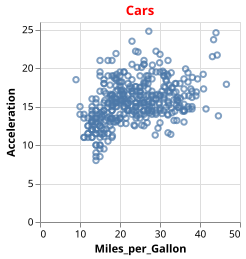
The original Vega-Lite documentation describes all config options in great detail.
File IO
Plots that are created with VegaLite.jl can be saved to disc in a number of formats (PNG, SVG, PDF, ESP). To save a plot, simply call the save function:
using VegaLite, VegaDatasets
p = dataset("cars") |> @vlplot(:bar, x="count()", y=:Origin)
save("myplot.png", p)You can also pipe a plot into the save function:
using VegaLite, VegaDatasets
dataset("cars") |>
@vlplot(:bar, x="count()", y=:Origin) |>
save("myplot.pdf")Next steps
There are two main sources of information if you want to learn more about plotting with VegaLite.jl. The first is the excellent Vega-Lite documentation. The documentation describes the JSON original Vega-Lite version, but it should be fairly easy to understand how those examples translate into the Julia equivalent. The second source are the remaining sections in this documentation of VegaLite.jl. The section about the @vlplot macro should be especially useful for understanding how the JSON Vega-Lite syntax can be translated into the equivalent Julia version.
Moving from Vega-Lite Examples to Julia
Vega-Lite has a rich gallery of examples that often make a great starting point for developing visualizations. However, editing JSON and integrating it with Julia is not the simplest workflow. To translate a JSON specification to @vlplot syntax, do the following.
using VegaLite, Vega
spec = vl"""{
"$schema": "https://vega.github.io/schema/vega-lite/v4.json",
"description": "A simple bar chart with embedded data.",
"data": {
"values": [
{"a": "A", "b": 28}, {"a": "B", "b": 55}, {"a": "C", "b": 43},
{"a": "D", "b": 91}, {"a": "E", "b": 81}, {"a": "F", "b": 53},
{"a": "G", "b": 19}, {"a": "H", "b": 87}, {"a": "I", "b": 52}
]
},
"mark": "bar",
"encoding": {
"x": {"field": "a", "type": "nominal", "axis": {"labelAngle": 0}},
"y": {"field": "b", "type": "quantitative"}
}
}""";
# outputs the code as a string so then be copied/pasted and edited
code_str = sprint(Vega.printrepr, spec)
#=
code_str now contains:
"@vlplot(\$schema=\"https://vega.github.io/schema/vega-lite/v4.json\",encoding={x={axis={labelAngle=0},field=\"a\",type=\"nominal\"},y={field=\"b\",type=\"quantitative\"}},mark=\"bar\",description=\"A simple bar chart with embedded data.\")"
=#
# prints the code to stdout more prettily and without the data so then can be copied/pasted
# and edited and new data piped in from a table
Vega.printrepr(stdout, spec, indent=true, include_data=false)
#=
Result
@vlplot(
$schema="https://vega.github.io/schema/vega-lite/v4.json",
encoding={
x={
axis={
labelAngle=0
},
field="a",
type="nominal"
},
y={
field="b",
type="quantitative"
}
},
mark="bar",
description="A simple bar chart with embedded data."
)
=#